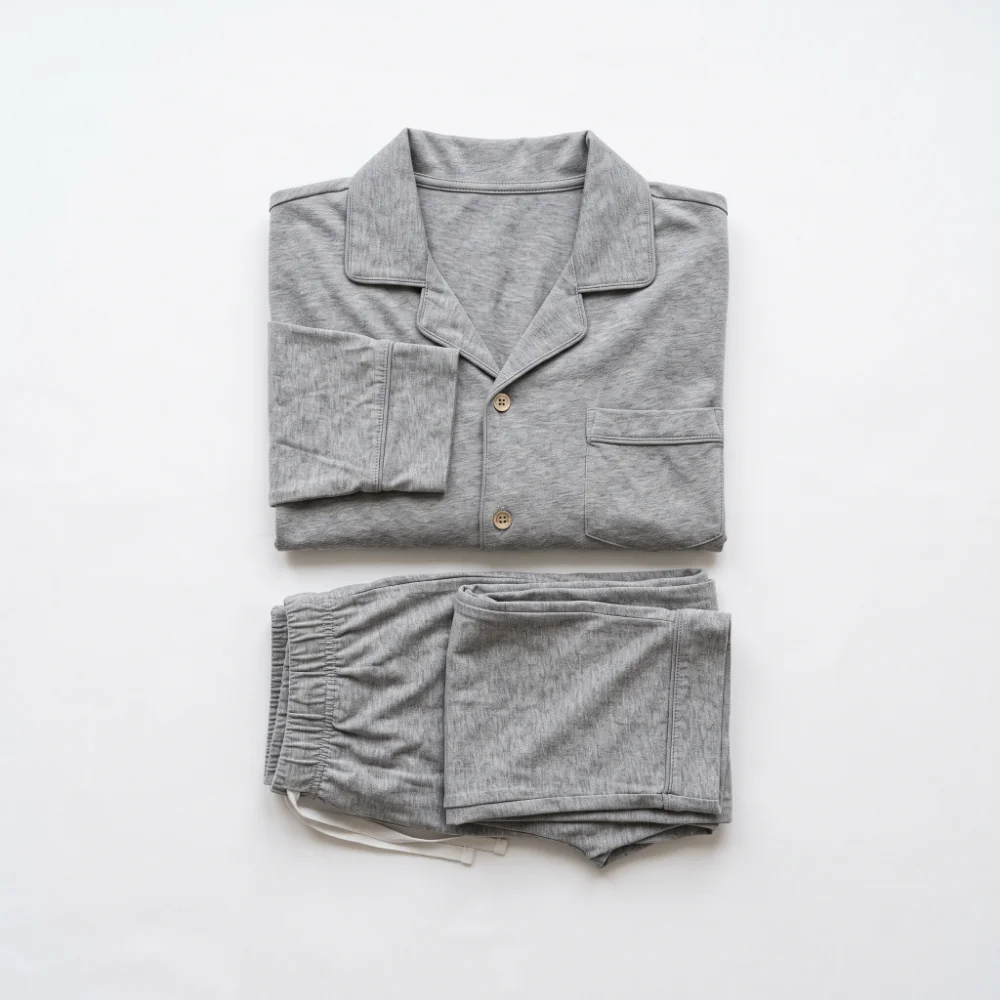

ÉTIQUETTES À REMPLACER — E ET Y
Les deux mots repères qui ont changé le 21 septembre :
E comme je
et
Y comme pyjama
. À coller par-dessus les anciennes sur ton affichage. Les deux lettres sont des voyelles : l'encre est rouge, comme sur la frise.
IMPRIMER
Pour la frise, tu peux ne découper que la photo.
E
e
je
Y
y

pyjama